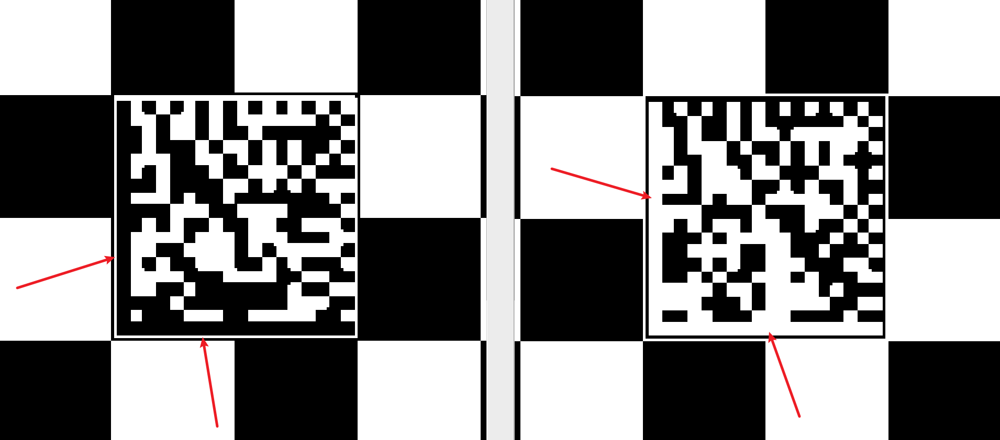
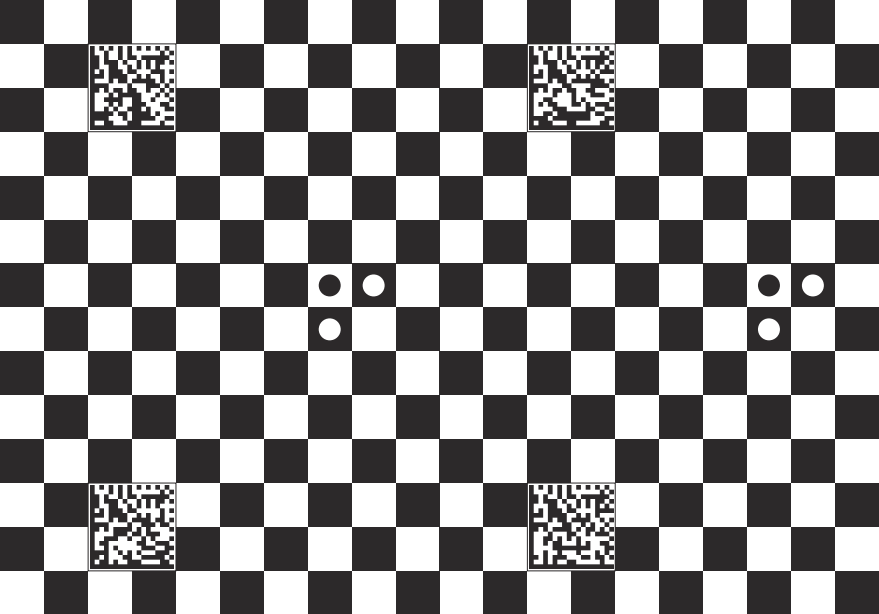
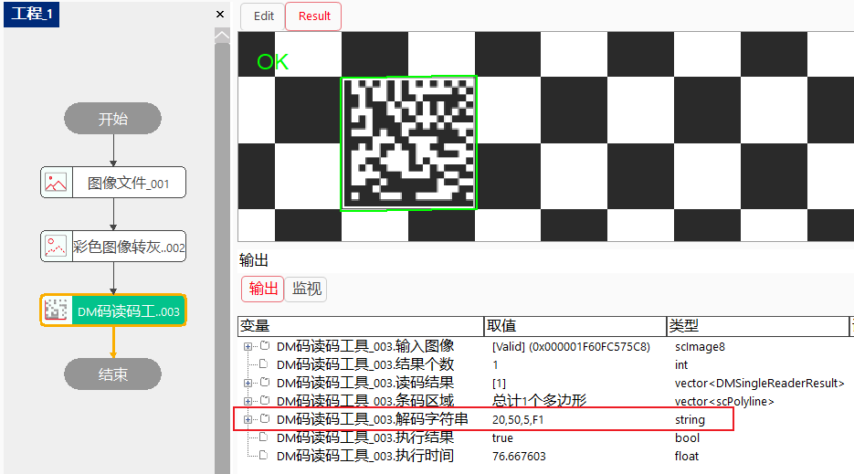
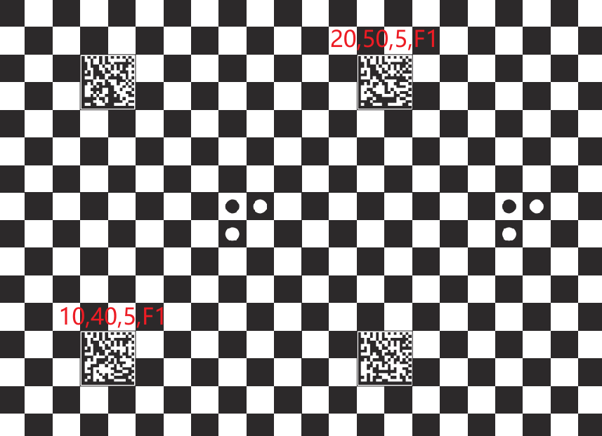

标准靶标设计时，棋盘格需满足以下条件：
棋盘格靶标设计时，二维码需满足以下条件：
棋盘格靶标设计时，圆形Mark需满足以下条件：
标准的DM码是存在方向的，其方向是通过DM码的L边方向来确定的，而且L边的极性确定了DM码的极性。我们知道DM码是由其区域内若干个白色的小方格和若干个黑色的小方格组成的，而且这些小方格遍布了其区域内的所有位置，当我们观察DM码的区域时可以发现，总是会有两个相邻的边缘完全是由白色或黑色的线条组成的，这样两个线条就表示了DM码的L边。如下图所示，左侧DM的L边为黑色的，表明此DM码极性为黑色，其方向为向右向上；右侧DM码的L边为白色的，表明此DM码极性为白色，其方向同样为向右向上。
而在进行我们靶标设计的时候，要求其DM码L边方向为向右向上，且全局靶标坐标系的方向和DM码的方向一致，即全局靶标坐标系的原点在整个靶标的左下点。

按照上面章节说明的标准规格，设计好的标准靶标如下图所示。

用户需要验证所使用的靶标是否满足要求时，可以采集一幅图像，使用VA中的“DM码读码工具”进行读码，以保证项目中使用的靶标满足要求。

可取一张靶标图像，利用DM码读码工具读取不同位置处的两个二维码，查看二维码内的坐标值，并观察其坐标增长趋势是否和DM码的L边方向一致。如下图所示，DM码的L边为向右向上，而此图中靠右上的二维码坐标值比左下二维码的坐标值更大，说明此靶标的全局靶标坐标系方向和二维码L边方向一致，则其符合标准标靶的坐标系标准。
